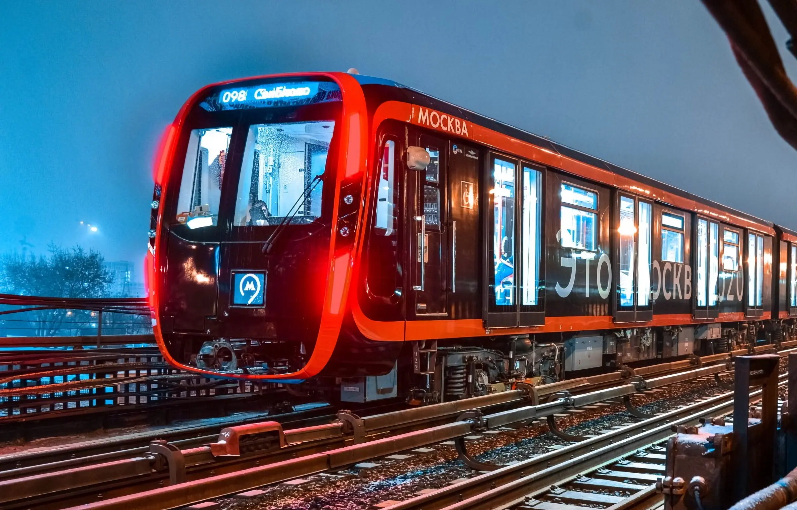
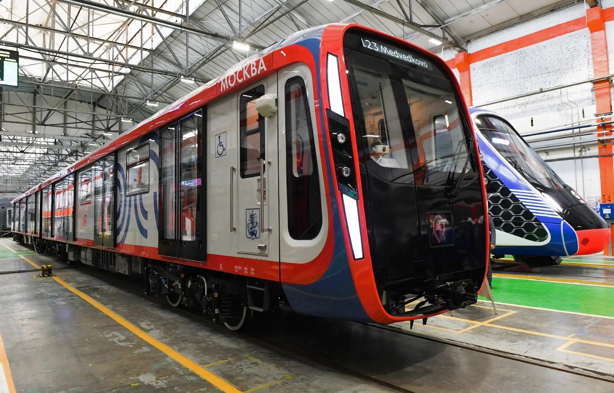
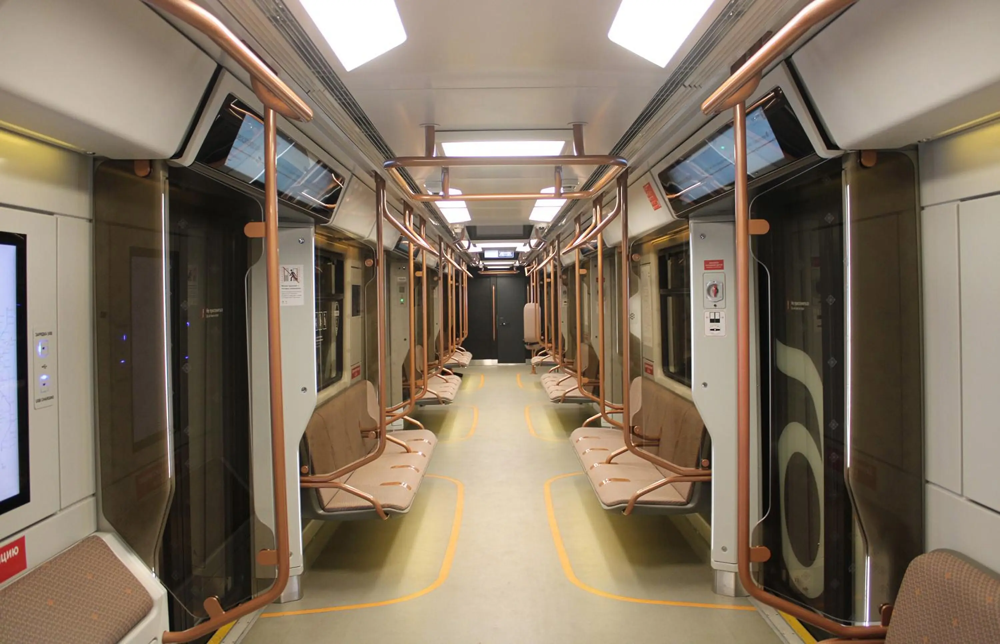
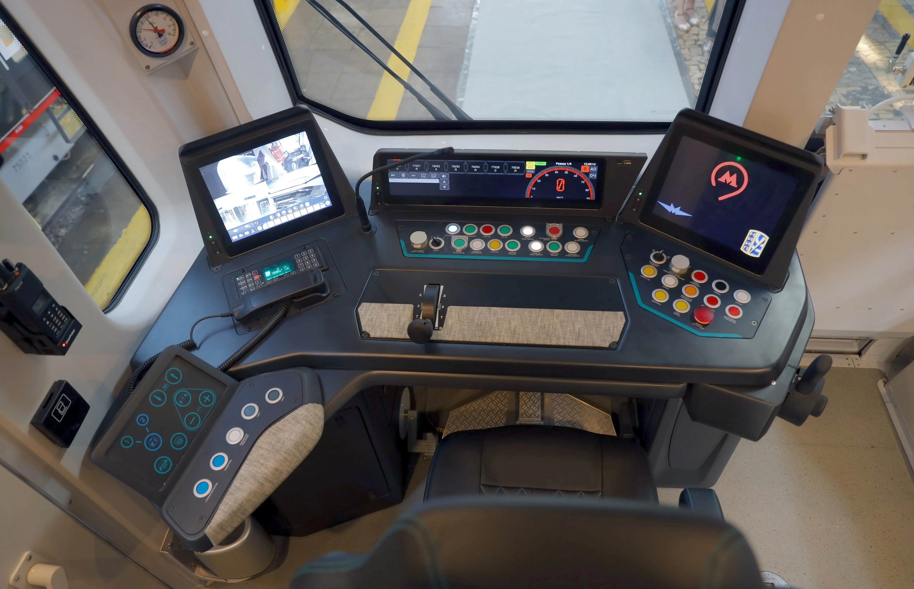

Метропоезд 81-765 «Москва»
81-775 / 776 / 777 — 81-77 - серия, 5 - моторный головной, 6 - моторный промежуточный, 7 - прицепной промежуточный.Выпускается с 2020 года на Метровагонмаш. Построено 108 составов.
Обновлённая версия метропоезда 81-765 «Москва» с новым дизайном маски кабины, сдвижными с шириной 1,6 метров дверьми (вместо прислонно-сдвижных с шириной 1,4 м), увеличенными по ширине до тех же 1,6 м межвагонными переходами.
Так же акцент сделан на вирусную безопасность — кабина машиниста и пассажирский салон оборудованы системами обеззараживания воздуха, позволяющими дезактивировать 99% вирусов и бактерий.
В каждом вагоне установлено по 46 USB зарядных розеток, поручни покрыты защитно-тепловым покрытием, а интерактивные экраны на стенках получили большую диагональ с 19 до 27 дюймов.
Технические Характеристики:
Г-моторный головной, П-прицепной промежуточный, М-моторный промежуточный
- Вместимость — 8×186 чел.
- Сидячие — 4×38 мест (Г и П) и 4×31 место (М)
- Высота — 3680 мм
- Длина — 2 × 20 120 мм(Г) и 6 × 19 140 мм (П и М)
- Ширина — 2686 мм
- Колея — 1520 мм
- Конструкционная скорость — 90 км/ч
- Минимальный радиус прохождения кривых — 60 м
- Мощность ТЭД — 6 × 4×170 кВт (4080 кВт)
- Тип ТЭД — асинхронные, TME 43-23-4
- Род тока — постоянный (750 В)
- Служебная масса — 38 т (Г) и 36 т (П), и 29 т (М)
- Составность — 8 вагонов
Эксплуатация
- Россия: Москва
  
сделали Лядов Тимофей и Никитин Станислав